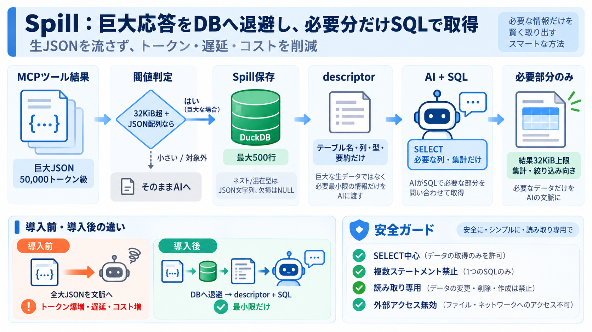

duckdb_mcp – DuckDB Community Extensions
Security Framework: Flexible security models supporting both development and production environments. Development mode o…

Security Framework: Flexible security models supporting both development and production environments. Development mode o…
[10:07] and network endpoints are accessible from a session run today. A lot of the default settings on these tools m…
## 2026-07-10 485 entries shipped [...] ## 2026-09-15 1 entry shipped MCP Aard — One MCP server, 173 agencies, 10 t…
To install DuckDB Server for Claude Desktop automatically via Smithery: ### Claude Desktop Integration Configure the M…
Post asset The DuckDB/MotherDuck MCP server allows the AI copilot (Cursor) to directly run queries against local DuckDB…